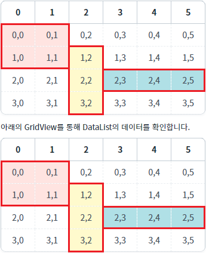
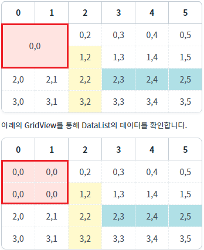
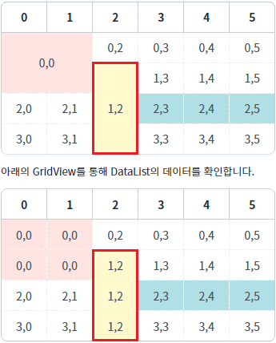
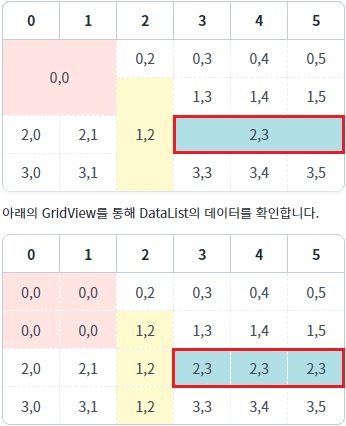

GridView의 'mergeCell' 메소드를 사용하여 데이터와 상관없이 셀을 병합한 예제입니다. 병합된 셀의 값은 첫 번째(기준) 셀의 값으로 변경됩니다.
스크립트로 데이터가 다른 셀 병합하기
1
STEP 1: 초기 상태를 확인합니다.
동일한 DataList와 연결된 두 개의 GridView가 구성되어 있습니다. 하단에 구성된 GridView를 통해 셀 병합 시 DataList에 할당된 데이터를 확인합니다. GridView와 연결된 DataList의 데이터는 'Row Index,Column Index'로 구성되어 있습니다. 병합할 셀의 배경색이 설정되어 있습니다. 각 버튼을 클릭하여 병합된 셀의 모양과 셀의 데이터를 확인합니다.
Image 1.브라우저(Chrome) 실행 예시

2
STEP 2: 셀 (0,0) ~ (1,1) 병합하기
'셀 (0,0) ~ (1,1) 병합' 버튼을 클릭합니다.3
STEP 3: 실행된 결과를 확인합니다.
셀이 병합되고 각 셀의 데이터가 '0,0'으로 변경됩니다.
Image 2.브라우저(Chrome) 실행 예시 - GridVeiw

4
STEP 4: 셀 (1,2) ~ (3,2) 병합하기
'셀 (1,2) ~ (3,2) 병합' 버튼을 클릭합니다.5
STEP 5: 실행된 결과를 확인합니다.
셀이 병합되고 각 셀의 데이터가 '1,2'로 변경됩니다.
Image 3.브라우저(Chrome) 실행 예시 - GridVeiw

6
STEP 6: 셀 (2,3) ~ (2,5) 병합하기
'셀 (2,3) ~ (2,5) 병합' 버튼을 클릭합니다.7
STEP 7: 실행된 결과를 확인합니다.
셀이 병합되고 각 셀의 데이터가 '2,3'으로 변경됩니다.
Image 4.브라우저(Chrome) 실행 예시 - GridVeiw

GridView의 'mergeCell' 메소드를 사용하여 스크립트를 작성합니다. 세부 설정은 아래의 스크립트 예시에 작성되어 있습니다.
Example 1.Script - 열과 행 병합
//예제 파일에서는 스크립트 scwin.btn_exam1_1_onclick에 작성되어 있습니다. // GridView 'grd_exam1'의 셀을 병합합니다. // Row Index가 0이고 Column Index가 0인 셀을 기준으로 아래 셀 1개와 오른쪽 셀 1개, 오른쪽 셀의 아래 셀 1개가 병합됩니다. 총 4개의 셀이 병합됩니다. grd_exam1.mergeCell({ "rowIndex": 0, "colIndex": 0, "colSpan": 2, "rowSpan": 2 });
Example 2.Script - 행 병합
//예제 파일에서는 스크립트 scwin.btn_exam2_1_onclick에 작성되어 있습니다. // GridView 'grd_exam1'의 셀을 병합합니다. // Row Index가 0이고 Column Index가 0인 셀을 기준으로 아래 셀 2개가 병합됩니다. 총 3개의 셀이 병합됩니다. grd_exam1.mergeCell({ "rowIndex": 1, "colIndex": 2, "rowSpan": 3 });
Example 3.Script - 열 병합
//예제 파일에서는 스크립트 scwin.btn_exam3_1_onclick에 작성되어 있습니다. // GridView 'grd_exam1'의 셀을 병합합니다. // Row Index가 0이고 Column Index가 0인 셀을 기준으로 오른쪽 셀 2개가 병합됩니다. 총 3개의 셀이 병합됩니다. grd_exam1.mergeCell({ "rowIndex": 2, "colIndex": 3, "colSpan": 3 });
mergeCell( mergeInfo )